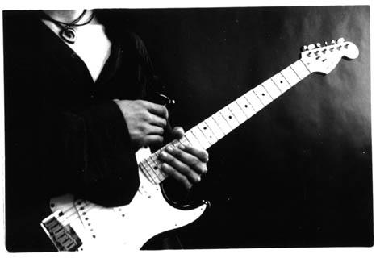

I am a passionate musician, and I spend a large part of my time playing guitar, violin and alto saxophone.
I am fond of jazz, blues and flamenco, but I really believe that every genre has something interesting to offer and, as a musician, try to keep my self as open-minded as possible. I understand music not just an art, but also a language, and I try to use it to communicate with others. Although I attend concerts rather often, I much prefer to share my music with friends and small groups of musicians, regardless of their musical knowledge, as I believe this to be a much richer experience both musically and personally.
Below you can listen to some of my guitar recordings.

A collection of minimalistic solo guitar short pieces. The album title is a homage to the late Chet Atkins, one of the all-time masters of fingerpicking and also one of the most honest and authentic musicians ever. Although stylistically different, Chet's album "Almost alone" has been one of my main inspirations when writing and recording these songs.
An eclectic collection of raw acoustic covers. All tracks in this album have been recorded using an electro-acoustic guitar plugged directly to a computer, with no additional equipment (preamplifiers, effect units, etc.), and with neither pre- nor post-processing of any kind. Editing involved only balance and volume adjustments to create the final mix. All lead tracks are first takes. This album is an experiment in trying to improve my tone and sound on the guitar.
Assorted songs that I composed sometime ago. Their style might be different to what I play nowadays, but I guess they are worth a listen.